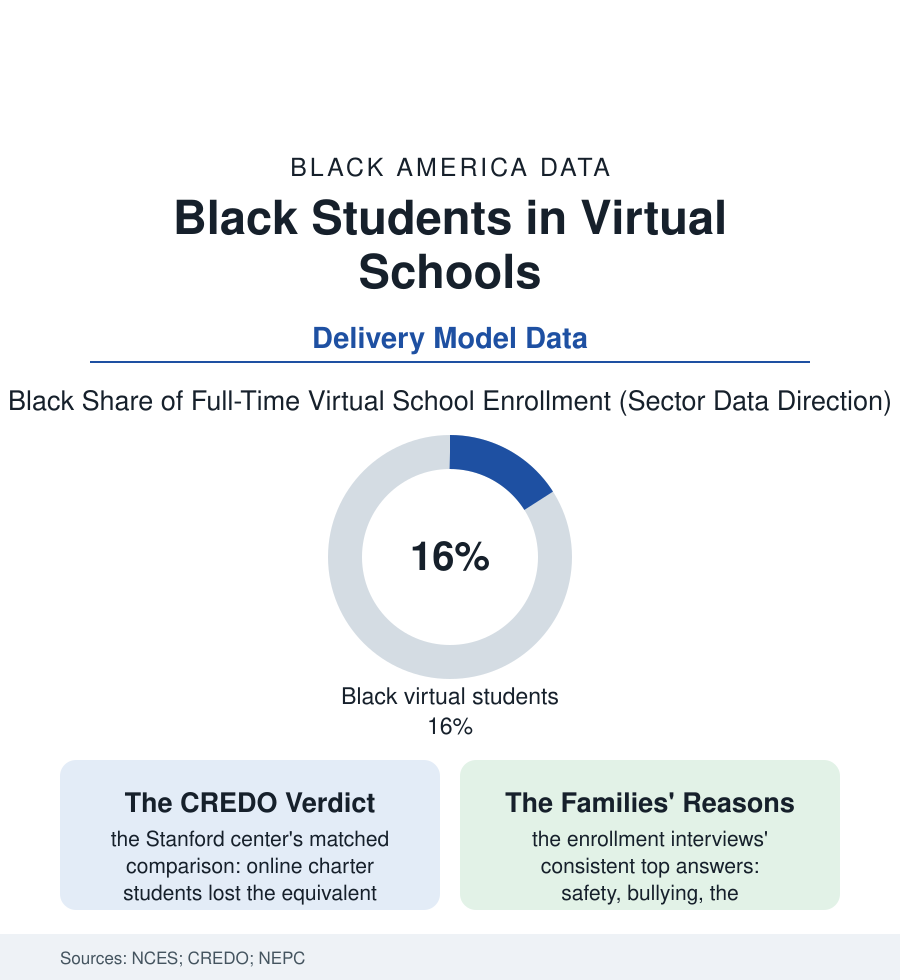

Black Education
The Virtual Classroom: Online Schools in the Outcome Data
Virtual schooling promised to route around every broken building in this atlas. The enrollment surged; the outcome studies are the education file's most lopsided verdict. The virtual file.

The pitch wrote itself across every failure in this atlas: if the building is dangerous, the bus is broken, the teacher is a substitute, and the district is a defendant — log in from home. Full-time virtual schools enrolled hundreds of thousands of American children before the pandemic and millions, briefly, during it, with Black families choosing the option at rates the enrollment data record. The outcome studies then returned a verdict of unusual unanimity. This article reads the virtual file.
The Evidence, Which Is Not Close
The research shelf stacks up with a consistency education findings rarely achieve: the CREDO matched-student studies — comparing online charter students to statistically identical classroom peers — finding losses equivalent to most of a year in mathematics and a substantial fraction in reading, replicated across the state studies; the NEPC's annual sector reports recording the virtual schools' graduation rates running twenty-plus points below the national figure in the state data (the four-year diploma rate in the low fifties where the nation's runs in the high eighties); the attrition data showing the model churning its enrollment (a third and more of the roster turning over annually in the operator reports — the school as a waystation); and the pandemic's universal experiment writing the confirmation at population scale (the remote period's losses in the assessment data falling hardest, as the summer file would predict, on the students with the least home infrastructure for school — the broadband file's households, the shared-room file's students, the working-parent file's unsupervised hours). The mechanism is no mystery in the learning-science data: the model removes the school's invisible services (the supervised day, the meals, the watching adults, the peer structure) and replaces the teacher's real-time reading of thirty faces with a dashboard's reading of logins — an exchange that taxes exactly the self-regulation development the early grades exist to build. The honest file also records the exceptions the averages conceal: the hospital-homebound and the elite athlete and the rural specialist-course student for whom virtual is the only door, the blended models whose data differ, the credit-recovery modules that serve the pushed-out student the building had already failed — niches where the tool fits the task it was actually built for.
Why the Families Chose It Anyway
The enrollment interviews are this file's most important data, because they refuse the easy moral: the Black parents in the choice studies cite safety first — the bullying file, the discipline file, the commute through the neighborhood file, the daughter harassed and the son suspended out of the building school — then flexibility (the working family's schedule, the caregiving teenager, the chronic illness the health file manages), then the building school's own record (the third substitute by October, the closed library, the school the state itself graded F). Virtual school, in these accounts, is rarely chosen as the best education; it is chosen as an exit — and its outcomes data therefore read, in part, as the receiving institution's failure to be more than an exit. The policy responses in the current state files sort into the model's tightening circle: the funding formulas audited after the sector's spectacular frauds (the enrollment-padding scandals of the big operators — attendance counted in keystrokes in the oversight reports), the authorizer closures, the engagement and snapshot-testing requirements — the regulation chasing a model whose core economics (the statewide scale, the automated grading, the teacher ratios triple the building's) are the outcomes' cause rather than their coincidence. The file's verdict, then, is not that the screen cannot teach — the tutoring and enrichment files prove otherwise daily — but that a school is a bundle of services of which instruction is one, and the virtual model unbundles it at the precise developmental moment its students can least supply the rest themselves.
Reading the Virtual-School Data
The virtual file is the education section's controlled experiment in what a school is: remove the building and count what was in it. The families' reasons remain standing after the verdict — the exits they fled are this atlas's other files — which is why the honest policy is double: fix the model's accounting, and fix the buildings that make the exit look like hope. The enrollment data will keep score of both.
More in Black Education
Black Educational Attainment: High School Parity, the College Gap
About 89 percent of Black adults hold a high school diploma and one in four holds a bachelor's degree or higher — the attainment ladder, the college completion gap, and the generational trend.
Historically Black Colleges and Universities: Enrollment and Degrees
More than 100 HBCUs enroll roughly 290,000 students and award about one in six Black bachelor's degrees — an outsized share from a small sector. The federal education data.
Black College Enrollment: 2.4 Million Students
About 2.4 million Black students are enrolled in American colleges — nearly two-thirds of them women. The NCES enrollment data by sector, level, and trend.
Source: National Center for Education Statistics; CREDO at Stanford online charter studies; National Education Policy Center virtual school reports; State virtual school data.